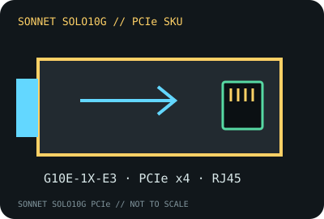

[ MODEL-SPECIFIC NETWORK HARDWARE RECORD ]
Sonnet Solo10G PCIe Card (G10E-1X-E3)
Single-port 10GBASE-T adapter with 5/2.5GbE NBASE-T capability over suitable existing copper cabling. This is the PCIe card, not the separate Thunderbolt 3 Solo10G product.

IDENTIFICATION: Exact Sonnet part number G10E-1X-E3, Solo10G PCIe Card. Do not conflate it with G10E-TB3 (Thunderbolt) or the Solo10G SFP+ variant.
Exact SKU, interface and compatibility
| Exact model / SKU / revision | Sonnet Solo10G PCIe Card, part G10E-1X-E3. Sonnet identifies the retail part number; record any individual PCB revision printed on the card. |
|---|---|
| Controller | Marvell AQtion AQC107-family 10GbE controller, as identified for this Solo10G card family; the public product page does not identify a silicon stepping. |
| Bus, ports and connector | PCI Express 3.0 x4 card; one 8P8C/RJ-45 copper port. The card can be installed in a compatible x4 or larger PCIe slot; a Thunderbolt-to-PCIe chassis is a separate host path. |
| Per-port link rates | 10GBASE-T, 5GBASE-T, 2.5GBASE-T and lower standard copper rates as supported by the peer and driver. Sonnet specifies Cat 6 to 55 m and Cat 6A to 100 m at 10GbE; 2.5/5GbE NBASE-T is supported over Cat 5e or better within the stated limits. |
| Driver and operating systems | Sonnet lists macOS 10.13.6 and later, Windows 10/11 and Server 2019/2022 with its Marvell AQtion driver, and Linux where the distribution kernel includes the AQC107 driver. Check Sonnet’s current download notes for the exact OS build; an in-box driver is not the same as vendor certification. |
| Compatibility caveats | Requires a PCIe x4 link or a compatible Thunderbolt expansion chassis. Slot bifurcation, macOS system model, driver signing, chassis bandwidth and airflow can constrain operation. A different Solo10G interface model is not interchangeable. |
| Revision warning | G10E-1X-E3 is the identifying part number. Log PCB/label revision and driver build; do not infer the chipset stepping from the shared Solo10G family name. |
Link and host notes
Use the actual negotiated link rate for test reporting. Even with a 10GbE switch, cable quality, switch capability, host PCIe allocation, OS driver and remote system can reduce rate or prevent negotiation.
Sonnet product documentation
- Sonnet Solo10G PCIe Card product specificationsManufacturer model-specific interface, cabling and feature details.
- Sonnet Solo10G PCIe Card Quick Start Guide (PDF)Manufacturer installation and host compatibility guidance.
- Marvell FastLinQ Edge family brief (PDF)Controller-family context; not a revision-specific Sonnet bill of materials.